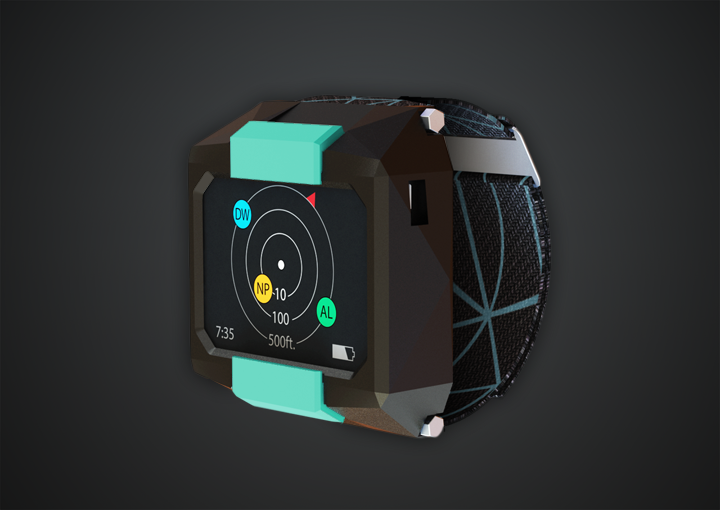

STORY
Origin, initially named ProxBand, arose out of the need to help skydivers avoid canopy collisions by equipping them with a wearable device to pinpoint other skydivers' locations.

Our initial efforts were centered around testing the radio and GPS communication technology. An Arudino, XBee radio modules and a black and white LCD display were integrated together and proved this concept could work!

With the initial technology proven, we divided into teams. One group worked on the electronics and coding, designing a custom PCB. The below image shows our board with the GPS chip magnified

Our mechanical team began working on the form for Origin. This initially was a rubber, molded wristband.

Our design team began optimizing the User Interface and what functionalities we wanted Origin to have. This included a variety of forms, including one shown below.

As we explored our graphic identity, there was also an onslaught of logos and designs!

With further iterations, our design continued to change

And finally, we arrived at our alpha prototype. Enjoy!
 Back to Home